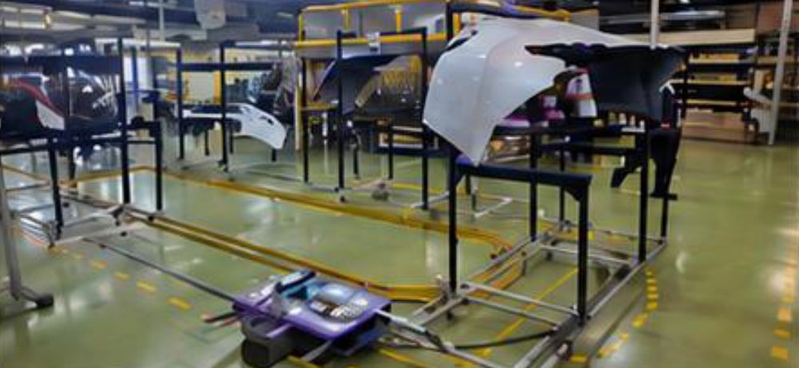

AGV untuk aliran material antar-stasiun
Kapan AGV layak dipakai, apa yang perlu disiapkan di lantai produksi, dan bagaimana troli serta titik docking dirancang.
Tim Engineering PT Arasi Nusantara Perkasa · 2 menit baca

Mendorong troli komponen dari gudang ke lini terlihat sepele, tetapi jika dilakukan puluhan kali per shift, waktunya terasa. Operator meninggalkan stasiunnya, jadwal pasokan tidak konsisten, dan lorong menjadi padat. Automated guided vehicle (AGV) mengambil alih pekerjaan berulang ini.
Kapan AGV masuk akal
- Rutenya tetap dan berulang, misalnya dari supermarket part ke beberapa stasiun perakitan.
- Beban dan bentuk troli bisa diseragamkan.
- Lantai cukup rata, dan lorongnya bisa dipisahkan dari jalur forklift.
Jika rutenya sering berubah atau barangnya sangat beragam, sistem lain mungkin lebih cocok. Pemetaan rute di awal membantu menjawab pertanyaan ini sebelum investasi.
Jalur dan navigasi
AGV paling sederhana mengikuti pita magnetik di lantai, dengan penanda tambahan untuk berhenti, belok, atau mengubah kecepatan. Sistem ini mudah dipasang dan diubah. Untuk area yang lebih dinamis, navigasi berbasis QR code atau laser bisa dipakai. Yang penting, persimpangan dan titik berhenti dirancang agar AGV tidak saling menunggu.
Troli dan docking
Bagian yang sering dilupakan adalah troli itu sendiri. Troli harus punya titik kait yang seragam, roda yang cocok dengan beban, dan rangka yang menahan part tanpa bergeser saat AGV berbelok. Di setiap stasiun, titik docking memastikan troli berhenti di posisi yang sama, sehingga operator selalu mengambil part dari sisi yang benar.
Keselamatan di lantai produksi
- Sensor anti-tabrak di depan AGV yang memperlambat lalu menghentikan unit saat ada halangan.
- Tombol berhenti darurat di kedua sisi.
- Lampu dan suara peringatan saat bergerak dan berbelok.
- Marka lantai yang jelas memisahkan jalur AGV dari jalur pejalan kaki.
Integrasi dengan stasiun
AGV bisa dipanggil dengan tombol di stasiun atau dijadwalkan oleh sistem. Sinyal sederhana dari PLC stasiun, misalnya troli kosong sudah siap diambil, sudah cukup untuk membuat alur pasokan berjalan sendiri tanpa operator perlu menelepon gudang.